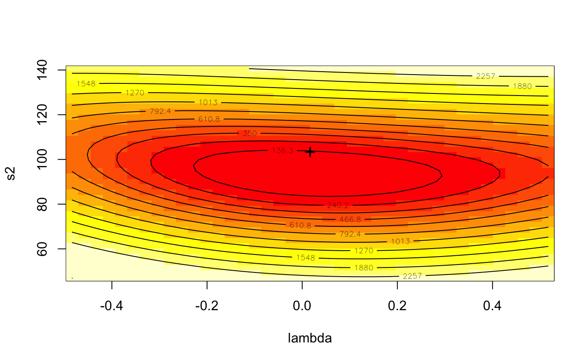

gstsls.RdAn implementation of Kelejian and Prucha's generalised moments estimator for the autoregressive parameter in a spatial model with a spatially lagged dependent variable.
gstsls(formula, data = list(), listw, listw2 = NULL, na.action = na.fail, zero.policy = NULL, pars, scaleU=FALSE, control = list(), verbose=NULL, method="nlminb", robust=FALSE, legacy=FALSE, W2X=TRUE)
| formula | a symbolic description of the model to be fit. The details
of model specification are given for |
|---|---|
| data | an optional data frame containing the variables in the model. By default the variables are taken from the environment which the function is called. |
| listw | a |
| listw2 | a |
| na.action | a function (default |
| zero.policy | default NULL, use global option value; if TRUE assign zero to the lagged value of zones without
neighbours, if FALSE (default) assign NA - causing |
| pars | starting values for \(\lambda\) and \(\sigma^2\) for GMM optimisation, if missing (default), approximated from initial 2sls model as the autocorrelation coefficient corrected for weights style and model sigma squared |
| scaleU | Default FALSE: scale the OLS residuals before computing the moment matrices; only used if the |
| control | A list of control parameters. See details in optim or nlminb |
| verbose | default NULL, use global option value; if TRUE, reports function values during optimization. |
| method | default nlminb, or optionally a method passed to optim to use an alternative optimizer |
| robust | see |
| legacy | see |
| W2X | see |
When the control list is set with care, the function will converge to values close to the ML estimator without requiring computation of the Jacobian, the most resource-intensive part of ML estimation.
A list object of class gmsar
simultaneous autoregressive error coefficient
GMM coefficient estimates (including the spatial autocorrelation coefficient)
GMM coefficient standard errors
GMM residual variance
sum of squared GMM errors
number of parameters estimated
NULL
the call used to create this object
GMM residuals
NULL
Difference between residuals and response variable
model formula
NULL
zero.policy for this model
NULL
list of internal bigG and litg components for testing optimisation surface
object returned by optimizer
start parameter values for optimisation
NULL
(possibly) named vector of excluded or omitted observations if non-default na.action argument used
Kelejian, H. H., and Prucha, I. R., 1999. A Generalized Moments Estimator for the Autoregressive Parameter in a Spatial Model. International Economic Review, 40, pp. 509--533; Cressie, N. A. C. 1993 Statistics for spatial data, Wiley, New York.
Roger Bivand, Gianfranco Piras (2015). Comparing Implementations of Estimation Methods for Spatial Econometrics. Journal of Statistical Software, 63(18), 1-36. https://www.jstatsoft.org/v63/i18/.
data(oldcol) COL.errW.GM <- gstsls(CRIME ~ INC + HOVAL, data=COL.OLD, nb2listw(COL.nb, style="W")) summary(COL.errW.GM)#> #> Call: #> gstsls(formula = CRIME ~ INC + HOVAL, data = COL.OLD, listw = nb2listw(COL.nb, #> style = "W")) #> #> Residuals: #> Min 1Q Median 3Q Max #> -37.87710 -5.74981 -0.21447 6.19490 22.85527 #> #> Type: GM SARAR estimator #> Coefficients: (GM standard errors) #> Estimate Std. Error z value Pr(>|z|) #> Rho_Wy 0.454171 0.185680 2.4460 0.01445 #> (Intercept) 43.782818 10.923192 4.0082 6.117e-05 #> INC -0.994831 0.382774 -2.5990 0.00935 #> HOVAL -0.267076 0.091984 -2.9035 0.00369 #> #> Lambda: 0.016647 #> Residual variance (sigma squared): 103.36, (sigma: 10.167) #> GM argmin sigma squared: 93.729 #> Number of observations: 49 #> Number of parameters estimated: 6 #>aa <- GMargminImage(COL.errW.GM) levs <- quantile(aa$z, seq(0, 1, 1/12)) image(aa, breaks=levs, xlab="lambda", ylab="s2")COL.errW.GM <- gstsls(CRIME ~ INC + HOVAL, data=COL.OLD, nb2listw(COL.nb, style="W"), scaleU=TRUE) summary(COL.errW.GM)#> #> Call: #> gstsls(formula = CRIME ~ INC + HOVAL, data = COL.OLD, listw = nb2listw(COL.nb, #> style = "W"), scaleU = TRUE) #> #> Residuals: #> Min 1Q Median 3Q Max #> -37.87710 -5.74981 -0.21447 6.19490 22.85527 #> #> Type: GM SARAR estimator #> Coefficients: (GM standard errors) #> Estimate Std. Error z value Pr(>|z|) #> Rho_Wy 0.454171 0.185680 2.4460 0.01445 #> (Intercept) 43.782818 10.923192 4.0082 6.117e-05 #> INC -0.994831 0.382774 -2.5990 0.00935 #> HOVAL -0.267076 0.091984 -2.9035 0.00369 #> #> Lambda: 0.016647 #> Residual variance (sigma squared): 103.36, (sigma: 10.167) #> (scaled) GM argmin sigma squared: 0.96653 #> Number of observations: 49 #> Number of parameters estimated: 6 #>listw <- nb2listw(COL.nb) W <- as(listw, "CsparseMatrix") trMat <- trW(W, type="mult") impacts(COL.errW.GM, tr=trMat)#> Impact measures (lag, trace): #> Direct Indirect Total #> INC -1.0543769 -0.7682309 -1.8226078 #> HOVAL -0.2830618 -0.2062420 -0.4893038